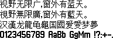

字样资料 / Alcatel OT-715
Alcatel OT-715 · 13×14
10,402个映射码位，含9,395个非空汉字；GB2312汉字6,763/6,763，严格Big5汉字6,885/13,061。95个可打印ASCII齐全，其中94个非空及空格。不宣称完整Big5、GBK或Unicode覆盖。 · 13×14 · 简体、繁体
放大观察 · 3×

原尺寸 · 1×
来源与字样信息
- 家族
- Alcatel OT-715
- 排版说明
- 四行固定样文按实际Unicode取字，保留13×14汉字框及同层西文字宽。字间增加1px、行间4px仅为样图布局；实机bearing、advance和基线未逆向确认，不冒充原机排版。不缩放、不裁框、不补字。
- 字符框
- 13×14 px
- 字面／墨迹
- 13×14 px
- 字符范围
- 简体、繁体
- 样本文字
- 视野无限广，窗外有蓝天。 視野無限廣，窗外有藍天。 汉漢龙龍龟龜国國爱愛梦夢
- 拉丁样文
- 0123456789 AaBb GgMm !?:+-.
- 覆盖说明
- 10,402个映射码位，含9,395个非空汉字；GB2312汉字6,763/6,763，严格Big5汉字6,885/13,061。95个可打印ASCII齐全，其中94个非空及空格。不宣称完整Big5、GBK或Unicode覆盖。
- 缺字
- 样文无缺字
- 样张类型
- 固件原生13×14汉字与同层不等宽ASCII；繁体覆盖不全。
- 风格
- 未分类
- 用途
- 设备界面
- 字形来源
- BF51G-1CALCN1 / ___103_KK188451固件静态提取。Unicode高字节分页、低字节映射到宽度桶及字模索引；列优先MSB-first原生1-bit点阵，不执行固件、不矢量取模。
- 授权状态
- 未确认开放再分发授权
- 许可说明
- 第三方公开存档不等于再分发许可。仅展示固定小样图、聚合研究报告和无字模离线脚本；不公开完整ROM、固件、字体或任何字库子集，使用与再分发仍受原权利约束。
- 说明
- 汉字与P802中号UID 0x18be高度相似：GB2312为6,756/6,763同形，全部共同汉字为9,039/9,047；P908同UID为6,367/6,763及8,803/9,359。与已收Solaris GBK14为3,506/9,395精确同形，允许±1px平移的平均Dice为0.935807，Dice不是精确重复率。同Unicode仅裁外部空白，不缩放。与两款索爱中号的94个可见ASCII均有像素差异，仅空格都为空白。按设备来源独立展示，不据相似度推断作者、继承或授权关系；P802中号不是已收P802小号。
- 获取方式
自行取得并确认有权处理SHA匹配的本地固件。工具仅离线重绘这张固定样图，不联网、不执行固件、不导出完整字体或字库子集。
- 来源
- Alcatel OT-715 固件历史存档资料页
- 原生证据
说明：SHA锁定固件；独立Pillow位解码与字节级地址复核全部10402条记录；列尾低2位全为0。
source_sha256：00028ebf54a5b7dca4ae4d20336d89c74f2f7c354f36f3f19a381c79ac285462
mappedCharacters：10402
nonblankCjk：9395
gb2312Han：6763
big5Han：6885
big5ExpectedHan：13061
printableAscii：95
查看原生设计来源
字体使用与再分发按原来源许可执行。